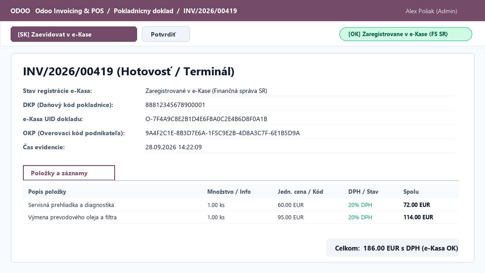
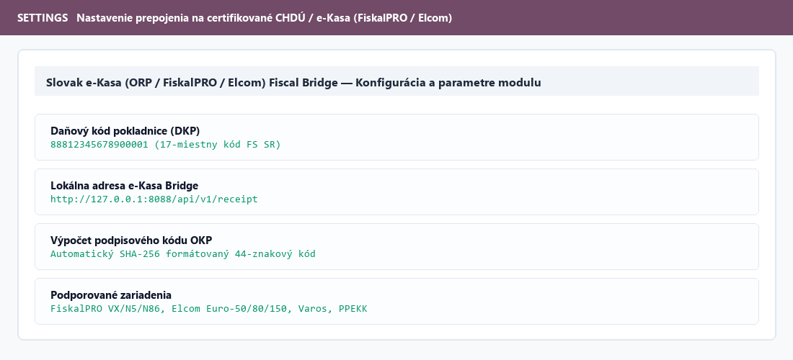

Financial Administration SR e-Kasa Integration (OKP, UID, DKP) for Odoo
Generates mandatory OKP, stores DKP and official e-Kasa UID.
Connects Odoo with local certified Slovak fiscal printers & ORP.
Automatically generates valid 44-char OKP code if internet drops.


100% Clean Odoo ORM Code | Compatible with Odoo Community & Enterprise | Full Source Code Included
Support & Customizations: apoliak@apoliak.online | https://apoliak.online